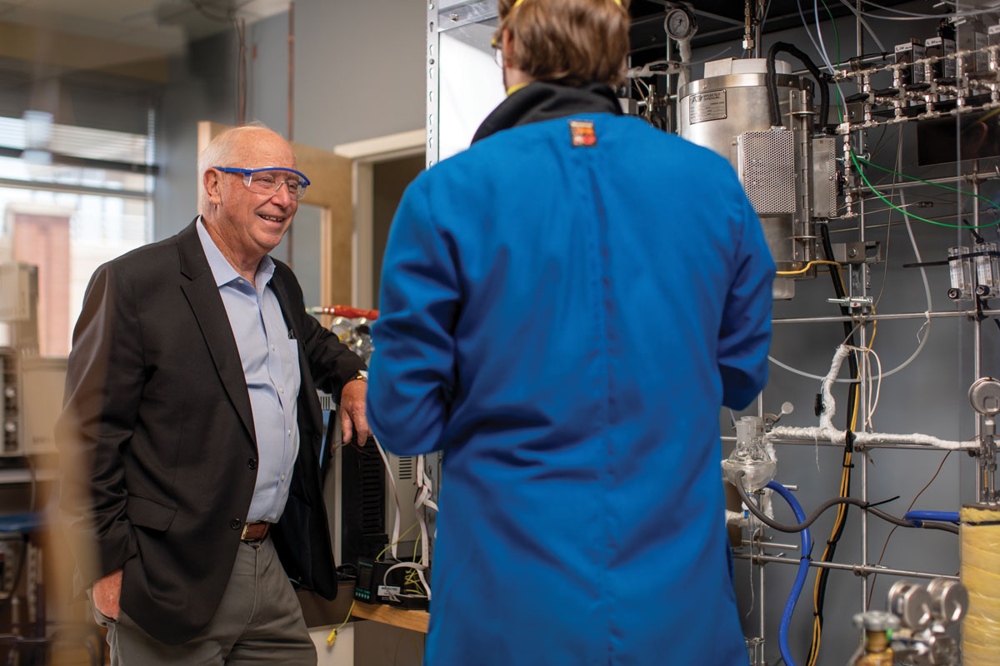

From the Dean
It is impossible to reflect upon 2020 without considering the impact of the novel coronavirus that changed our world. Even now, we’re not entirely sure how COVID-19 will impact us long-term. What we do know is that engineers solve problems and this one is no different.
Like many, our engineers immediately responded to the shortage of medical and personal protective equipment by forming collaborations to design a do-it-yourself ventilator from 3D-printed parts, to disinfect facemasks for reuse, to create small-batch sanitizer and to create a predictive data model to track the coronavirus spread, allowing health systems to anticipate needed resources.
Our Medicines for All Institute formed new public-private partnerships this year to bring advanced manufacturing of critically needed pharmaceuticals back to the United States, producing drugs currently in short supply that Americans need most, right here at home.
At the same time, our faculty transitioned to remote teaching while our students adapted to an all-remote learning environment. Although COVID-19 changed the way we did things, it didn’t slow us down.
We are on track to open our 133,000-square-foot Engineering Research Building in early 2021. Our faculty continue making research advances that better humanity, such as a cane that steers itself to guide those with visual impairment and technologies for early detection of Parkinson’s disease. Our students continue earning national and international recognition, including selection to the prestigious Lindau Nobel Laureate meeting, and our biomedical engineering graduate program is among the top-ranked.
It’s been a year of progress for VCU Engineering as we’ve advanced in research, in industry partnerships and in unexpected ways. I hope it’s been a similar year for you.
Go Rams!
Securing the Drug Supply Chain
Medicines for All Institute part of $354 million contract to prevent domestic shortages of critical medications

To prevent domestic shortages of critical medications, the Medicines for All Institute (M4ALL), based at VCU Engineering, has joined forces with pharmaceutical industry leaders to bring manufacturing of vulnerable pharmaceuticals and their ingredients back to the United States.
Phlow Corp., a Richmond-based public benefit corporation focused on the research, development and manufacturing of essential pharmaceuticals, leads the partnership and will incorporate M4ALL’s advanced manufacturing technologies to produce active pharmaceutical ingredients for critical and short-supply medications. Civica Rx, a leading nonprofit pharmaceutical company and national supplier of affordable, generic medications and AMPAC Fine Chemicals, with its Virginia-based pharmaceutical ingredient manufacturing operation, complete this new end-to-end pharmaceutical supply chain consortium to help reduce U.S. dependence on overseas drug manufacturers.
“Not only are we bringing significant benefit to society, but we are also driving sustainable economic development by providing a highly skilled workforce for the future.”— Barbara D. Boyan, Ph.D.
NAE, NAI, FAIMBE, FAAS, FASBMR
Alice T. and William H. Goodwin, Jr. Dean VCU College of Engineering
The U.S. Department of Health and Human Services announced a four-year contract with Phlow Corp. for $354 million to accelerate this initiative. The total contract value awarded to Phlow is up to $812 million which includes a four-year base award of $354 million with an additional $458 million included as potential options for long-term sustainability. Phlow Corp. was co-founded by M4ALL CEO B. Frank Gupton, Ph.D., and Eric Edwards, M.D., Ph.D., both VCU alumni.
“The timeliness of this partnership cannot be overstated,” said VCU Engineering Dean Barbara D. Boyan, Ph.D. “The ability to provide critical generic pharmaceuticals for the treatment of COVID-19 now and in the post-pandemic world that are manufactured in the United States is invaluable for ensuring the health care of Americans. We look forward to sharing the resources of the Medicines for All Institute with Phlow, Civica and AMPAC to meet these challenges.”
“The creation of the Medicines for All Institute and its evolution into this larger network of activity is a perfect example of the benefits possible by creating strong public-private partnerships,” Boyan said.
“The COVID-19 event has made us acutely aware of our current vulnerability in this area. My colleagues and I are grateful for the opportunity to play a part in addressing this effort to fix the acute and chronic health care challenges that are facing us today by bringing pharmaceutical manufacturing back to the U.S.”— B. Frank Gupton, Ph.D.
Chief Executive Officer Medicines for All Institute
M4ALL was founded out of VCU Engineering in 2017 to expand access to safe, effective and affordable medications. To do this, the institute’s engineers use advanced manufacturing technologies that significantly curb waste, cut costs and reduce pollution.
M4ALL is a pioneer in the development of continuous flow processing, a method of producing active pharmaceutical ingredients uninterrupted. This eliminates the inefficient stops and starts of manufacturing these ingredients batch by batch, as they are commonly produced. Active pharmaceutical ingredients manufactured through continuous flow processing generate less waste and their quality tends to be higher and more consistent.
Gupton said since its inception the institute has actively trained engineers and scientists in low-income countries, especially in Africa, and implemented its processes there. Gupton sees including domestic drug manufacturers in the institute’s network as an important next step. “The Medicines for All Institute is a global initiative that focuses on increasing access to health care for those who need it most. This new U.S.-driven effort will allow us to focus on creating a more robust and sustainable supply chain of essential medications in our country,” Gupton said.